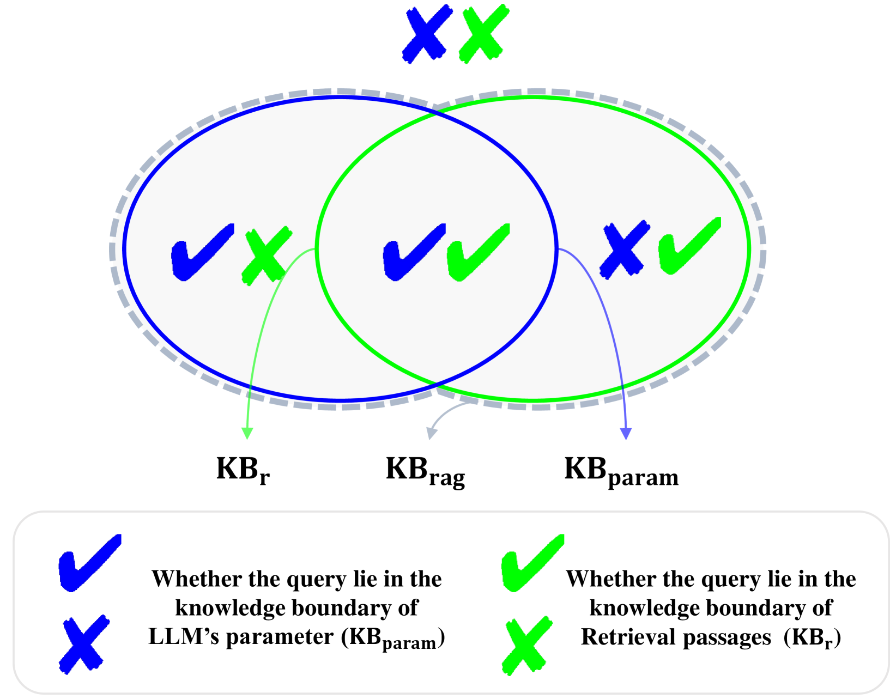

问题：RAG 不知何时该拒答
RAFT 等方法即使检索全是噪声、模型自身也不具备知识时，仍强行生成答案，无法回答"I don't know"。这在医疗、法律等高风险场景极其危险。
现有工作要么只考虑模型参数知识边界，要么只考虑检索知识边界，从未同时考虑两者。
核心思路：四象限知识边界
KB_param：模型无检索时能正确回答的查询集合
KB_r：检索段落中包含正确答案的查询集合
KB_rag = KB_param U KB_r
四象限：双知 / 仅参数知 / 仅检索知 / 双不知(→IDK)
